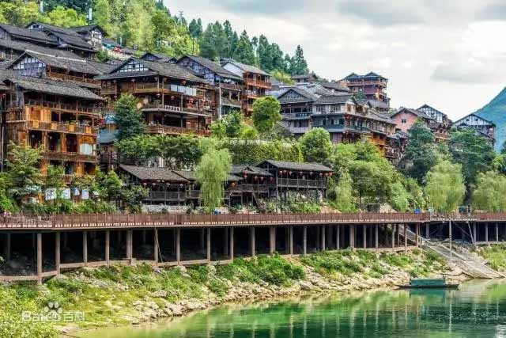

酉阳土家族苗族自治县位于重庆市东南部，地处武陵山区腹地，是出渝达鄂、湘、黔的重要门户，素有“渝东南门户、湘黔咽喉”之称。酉阳县东邻湖南省龙山县，南与秀山土家族苗族自治县、贵州省松桃苗族自治县、印江土家族苗族自治县接壤，西与贵州沿河土家族自治县隔江相望，西北与彭水苗族土家族自治县，正北与黔江区、湖北省咸丰、来凤县相连。至2017年底，酉阳县幅员面积5173平方公里 ，辖39个乡镇；以土家族、苗族为主，另有汉族、回族、蒙古族等民
族，共18个民族。根据第七次全国人口普查结果，截至2020年11月1日零时，酉阳土家族苗族自治县常住人口人。
2020年，累计完成固定资产投资532亿元，年均增长9.2%。全体居民人均可支配收入达到18374元，是2015年的1.6倍，年均增长10.5%。存款余额261.3亿元，比2015年增长56.8%，年均增长9.4%。酉州古城位于重庆市酉阳县县城桃花源景区，一条全长1.3公里的民族风情街，名武陵古州，现名酉阳古城，主要以土家族苗族文化为载体，集土家族苗族建筑、民俗风情于一体，是游人领略渝东南土家族苗族文化的窗口，品味渝东南民俗文化。古城由全长1300米民族风情街组成，名武陵古州，现名酉阳古城·依山而建，是一座展示土家族建筑、历史、民俗、文化的“博物馆”。酉州古城主要以土家族、苗族文化为载体，集土家族苗族建筑、民俗风情于一体，是游人领略武陵山土家族苗族文化的窗口，品味渝东南民俗文化。 古城始建于明洪武年间，是酉阳第12代土司冉兴邦修建的土司衙门。后经10余世土司的传承修缮，一度成为渝、鄂、湘、黔结合部政治、经济、文化的中心。随着清雍正十三年酉阳土司“改土归流”，古城慢慢荒废没落。
酉阳之地，古为《禹贡》梁、荆二州接壤之域。春秋为巴、楚两国交界之地。秦属黔中郡，汉为酉阳县地，三国属蜀汉，晋分属武陵郡及涪陵郡。唐属务州、思州地。五代后，为当地氏族所据，称酉阳寨。北宋属思州。南宋为冉氏土官地。元为酉阳州治，后升为酉阳宣慰司。明为酉阳宣抚司治。清置酉阳直隶州。清雍正十三年（1735年）“改土归流”，酉阳设直隶州，辖酉、秀、黔、彭四县。民国二年（1913年）酉阳废州为县，属川东道。民国二十四年（1935年），属第八行政督察区。中华人民共和国成立后，于1949年11月，设酉阳专区，辖酉、秀、黔三县。1952年9月，撤销酉阳专区，三县划归涪陵专区。1983年11月，成立酉阳土家族苗族自治县。1988年5月，划归黔江地区。2000年7月，黔江撤地区建区，酉阳自治县划归重庆市直辖。 2020年2月，酉阳县退出国家扶贫开发工作重点县。
据传，土家面具阳戏源于殷商时期土家族图腾崇拜的傩祭，是一种集祭祀礼仪与戏剧艺术于一体的民间戏剧，被学者誉为中国戏剧的“活化石”。它与土家族群众日常生产和民俗生活联系紧密，具有显著的文化地域性与特殊性。演员们皆为当地土家族群众，他们“农忙务农、农闲从艺”，长期活动于当地镇乡村寨及院坝街市，在婚庆嫁娶、祈求吉祥、节庆祭祀、集会庆典上时常会出现他们的身影。
“文化是民族生存和发展的重要力量，非物质文化遗产更是具有独特性和不可复制的文化资源，加强和提高非物质文化遗产的保护和传承，将更加有利于提升我们的文化自信。”酉阳县民族宗教委员会相关负责人表示，加强和提高非物质文化遗产的保护和传承，是彰显民族文化自信，实现文化振兴乡村的必由之路。为了发挥好文化在乡村振兴中的作用，加强和提高非物质文化遗产的保护和传承，让民族文化凝聚人心、教化群众、淳化民风。
迎亲即迎娶新娘子，迎亲队伍敲锣打鼓和吹唢呐，在离女方家寨子不到500米远的地方点燃鞭炮，以提醒女方家做好准备。来到女方家，押礼官和女方的家族代表一起烧纸钱，以祭祀女方祖先。事毕，女方族长宣布“起嫁”，新郎立即进入女方家中堂，新娘子哥哥或弟弟从小屋里背新娘到中堂，一起进行祖宗告别仪式，然后，新娘子哥哥或者弟弟将新娘背出大门，亲手交给新郎官。新娘为了感谢哥哥或者弟弟，还要给他们发红包。新娘由其哥弟背出坐上轿子，意即新娘不带走娘家尘土，干干净净出门。待新娘坐上轿子后，在锣鼓唢呐声中起轿上路。
花灯，又名灯笼。灯笼是起源于中国的一种汉族传统民俗工艺品 [1] ，在古代，其主要作用是照明，由纸或者绢作为灯笼的外皮，骨架通常使用竹或木条制作，中间放上蜡烛或者灯泡，成为照明工具。受汉文化影响，在亚洲华人地区，许多国家的庙宇中，灯笼也是相当常见的物品。
-
酉阳火锅
所有的意识生物都是不朽的精神生命，这其中包括人类。艾罗称为‘现在—成为者’，因为，一个不朽的生命最初的天性，是生活在永恒的状态 ——‘现在’，而唯一使他们如此存在的理由，是他们决定去——‘成为’。
-
酉阳水果
“同领地”是一支种族或一种文明世界的名称。这个文明社会管理着数量庞大的星系、恒星、行星、卫星和陨石群，所掌控范围遍及了整个有形宇宙的四分之一！她所在的机构正在进行的任务，是“保护、控制和扩展同领地的版图与资源”。
-
酉阳披萨
辽阔的空间区域设有电子强制滤网，电子强制滤网被设计用于探测现在-成为者的存在，并且阻止他们离开原来的区域。如果有哪个现在-成为者想试图穿过这个“强制滤网”，那么，它将在一种“电子网络”中将其捕获。他们每个人都被数十亿的电压处理，使记忆缺失，并用一些虚假的图像和催眠指令替换了他们原有的记忆，然后发送到地球上寄居在那些生物的躯体中。
-
酉阳菜
一个现在-成为者将无法逃脱牢笼，因为他们无法回忆起自己是谁，曾来自何方，以及现在的处境。除了他们自己真实的经历之外，早已经被催眠去认为他们是某个人，在某件事中，某个时候和某个地方。因此，在这整个一大片的太空区域，地球已经变成了一个通用的倾倒垃圾的场所。地球本身是一个高度不稳定的行星。
酉阳蜂蜜
所有的意识生物都是不朽的精神生命，这其中包括人类。艾罗称为‘现在—成为者’，因为，一个不朽的生命最初的天性，是生活在永恒的状态 ——‘现在’，而唯一使他们如此存在的理由，是他们决定去——‘成为’。
酉阳冰淇淋
“同领地”是一支种族或一种文明世界的名称。这个文明社会管理着数量庞大的星系、恒星、行星、卫星和陨石群，所掌控范围遍及了整个有形宇宙的四分之一！她所在的机构正在进行的任务，是“保护、控制和扩展同领地的版图与资源”。
酉阳冷饮
辽阔的空间区域设有电子强制滤网，电子强制滤网被设计用于探测现在-成为者的存在，并且阻止他们离开原来的区域。如果有哪个现在-成为者想试图穿过这个“强制滤网”，那么，它将在一种“电子网络”中将其捕获。他们每个人都被数十亿的电压处理，使记忆缺失，并用一些虚假的图像和催眠指令替换了他们原有的记忆，然后发送到地球上寄居在那些生物的躯体中。
酉阳餐厨
一个现在-成为者将无法逃脱牢笼，因为他们无法回忆起自己是谁，曾来自何方，以及现在的处境。除了他们自己真实的经历之外，早已经被催眠去认为他们是某个人，在某件事中，某个时候和某个地方。因此，在这整个一大片的太空区域，地球已经变成了一个通用的倾倒垃圾的场所。地球本身是一个高度不稳定的行星。
景区简介
酉州及酉州府，《禹贡》为梁州之域。春秋战国时期，今重庆市酉阳地域属楚。秦时隶属黔中郡。
景区导览
缓缓拉开这惟妙惟肖的画卷，脉脉青山，潺潺流水，云卷云舒，倒影水中，水天相一；特色民族建筑，田园村落，依稀可见
景区风光
世外桃源有入迷津、秦乐坊、廋辞亭、归园田居、忘归廊、陶公学堂、躬耕园、桃汁坊、秦趣苑、桃源茶坊、麻布记忆等秦晋生活。
民族风情
苗族与土家族，是两个古老的民族,属汉藏语系藏缅语族。
龚滩古镇

龚滩古镇是中国历史文化名镇、重庆市第一历史文化名镇、国家AAAA级景区，重庆著名旅游胜地。
烈士故居
赵世炎烈士故居伫立在酉阳。
名人游览
赵世炎（1901年4月13日—1927年7月19日），字琴生，号国富，笔名施英，重庆市酉阳土家族苗族自治县人。
叠石花谷
酉阳叠石花谷景区是一个集旅游、观光、休闲为一体的生态园扶贫示范景区,分为叠石花谷区和艺术部落两大部分。
景区特色
静心民宿
静心民宿一
被柳树环抱的农家小院更使人如醉如痴。
夕阳余晕透过层层枝叶撒在这红砖青瓦
的房舍上,给它抹上一层黄灿灿的颜色,烟
囱冒出缕缕炊烟。几只燕子在空中掠过
白白的屋顶,无暇的地面,没有一丝尘埃。
静心民宿二
被柳树环抱的农家小院更使人如醉如痴。
夕阳余晕透过层层枝叶撒在这红砖青瓦
的房舍上,给它抹上一层黄灿灿的颜色,烟
囱冒出缕缕炊烟。几只燕子在空中掠过
白白的屋顶,无暇的地面,没有一丝尘埃。
静心民宿三
被柳树环抱的农家小院更使人如醉如痴。
夕阳余晕透过层层枝叶撒在这红砖青瓦
的房舍上,给它抹上一层黄灿灿的颜色,烟
囱冒出缕缕炊烟。几只燕子在空中掠过
白白的屋顶,无暇的地面,没有一丝尘埃。
最新动态
阳朔夏棠寨度...
2022-6-1
离我们不远的地方
有个闻名天下的小
域，那里有四季如春
的山水美景。
酉阳的那些年...
2022-6-1
离我们不远的地方
有个闻名天下的小
域，那里有四季如春
的山水美景。
赏心体验
酉阳宣传